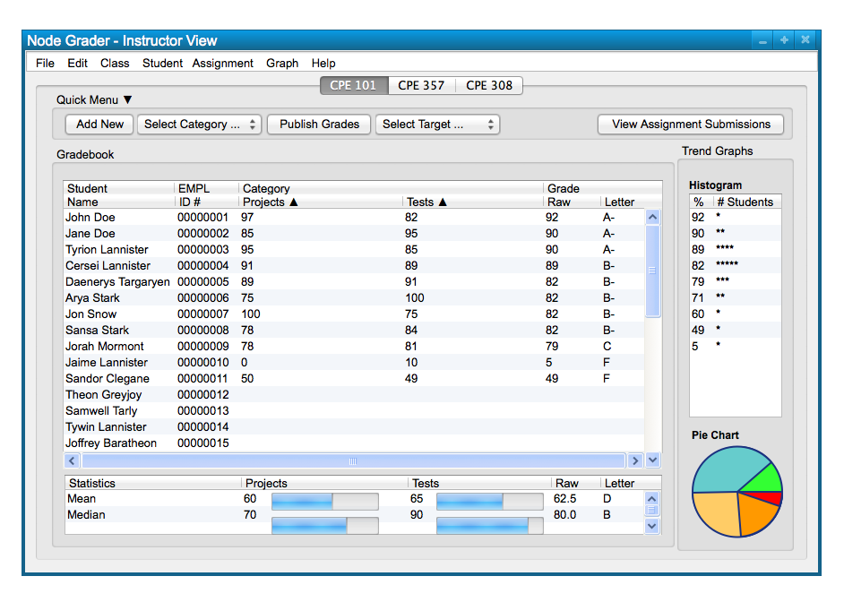

The gradebook contains a Statistics area located below the class spreadsheet. The Statistics averages the scores from
each assignment in a category to compute and display the Mean and Median scores for each so that a user can see the
average score that the entire class is scoring in each category so that they may adjust the grade scheme accordingly if
they wish. Each category lists a Mean and Median value, a progress-bar for a visual of the percent (out of 100) that the
value represents. The computation for the Mean and Median values also is applied to the class Raw Score and Letter Grade
to display how the class is doing overall at a glance. Figure 1 shows a sample class; the statistics can be viewed below
the class spreadsheet at the bottom of the window.

Figure 1: Sample Class.
The statistics window is simply a representation of the class averages on different categories, raw scores, and letter
grades. This is similar to how the class spreadsheet displays each individual student's average grades per category when
viewed in its un-expanded form.